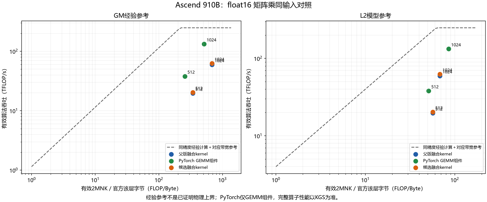

HG-KDA：从硬件证据到优化验证
matmul_bias_activation · Ascend 910B
01 自动对比
同输入PyTorch／候选
指标聚合与差异
02 形成诊断
Agent选择工具
源码＋IR＋Roofline
相对本批起点 1.023× · 完整评测42/42 · 补充18＋24项
历史成功方法的新采集与流程复现；模拟器退出异常按部分证据记录。
打开Markdown · 逐case数据
01 自动对比
相同输入、实际kernel与设备身份核验，脚本聚合指标并计算差异。
| FP16规模 | 起点融合kernel μs | PyTorch GEMM组件 μs |
|---|
| 512³ | 13.700 | 7.060 |
| 1024³ | 36.161 | 16.200 |
PyTorch仅GEMM组件；该表不是完整算子加速比。
02 Agent形成诊断
实际选择工具：read_source、read_ir、read_hotspots、read_paired_metrics、read_knowledge
读取源码、IR、成对指标、经验Roofline与热点。选择共享B和交错加载；六组开发输入筛选后，冻结共享B方案。
查看模型原始决策 · 查看工具选择

03 热点定位与修改验证
| 核 | 热点指令 | 模拟器时间 | 源码位置 |
|---|
| core0.cubecore0 | MOV_OUT_TO_L1_MULTI_ND2NZ | 4.52 μs | 454：b1_ptrs = b0_ptrs + BLOCK_SIZE_N * stride_bn |
| core0.veccore0 | WAIT_FLAG_DEVI | 5.29 μs | 473：v0 = acc0 + bias0[None, :] |
| core0.veccore1 | WAIT_FLAG_DEVI | 5.29 μs | 473：v0 = acc0 + bias0[None, :] |
指令源码映射来自编译debug信息；模拟器子进程退出异常，导出指令仅作部分诊断证据。
| 版本 | 相对PyTorch设备加速比 | 完整KGS | 补充检查 |
|---|
| 起点 | 0.865× | 42/42 | 18＋24 |
| 共享B候选 | 0.884× | 42/42 | 18＋24 |
相同15项实际延迟：1.023×起点
GM／L2／L1总流量基本不变；UB读写约下降16.9%，AIV MTE2指令数约下降18.2%，平均搬运粒度约增加21.7%。这比“总搬运量减少”更符合本次证据。
未消除所有等待；交错加载未进入正式评测。原模型不准确的归因已核验更正。
完整中文说明 · 逐case正式数据 · 最终源码